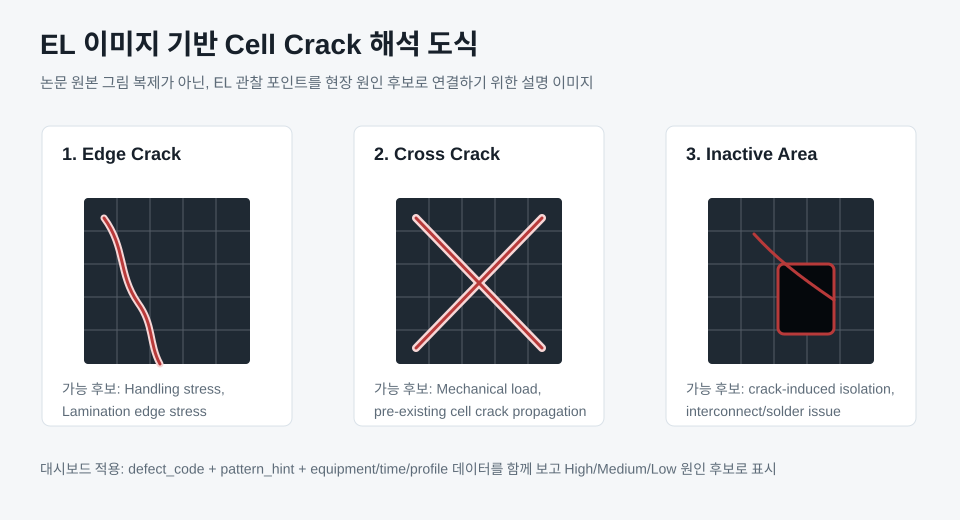
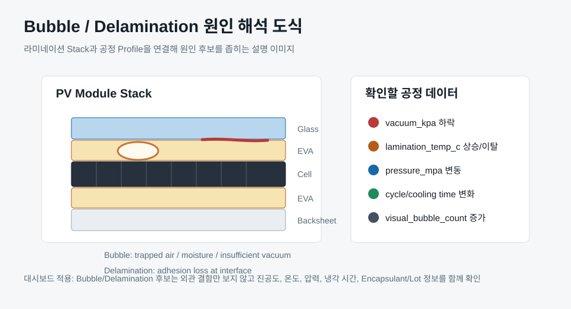
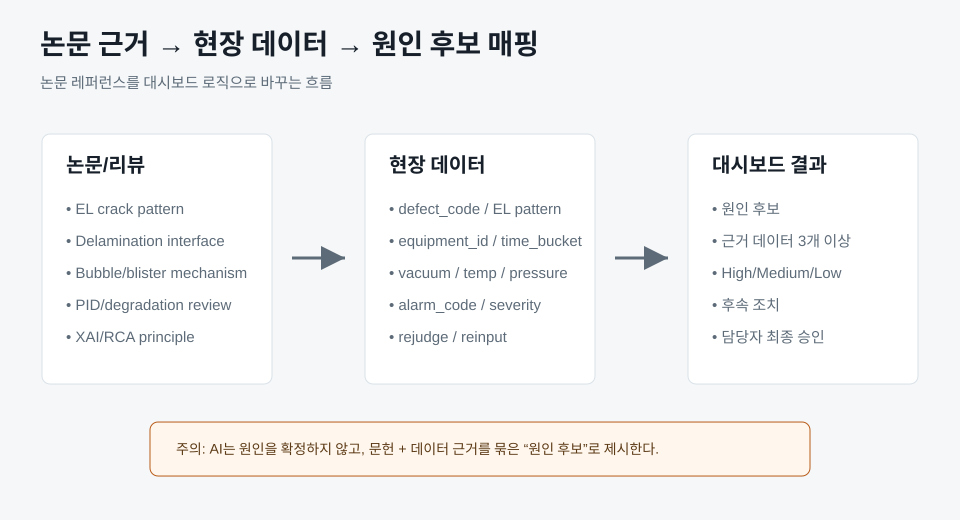

IEA PVPS Task 13: Review of Failures of Photovoltaic Modules
PV 모듈 Failure Mode, EL 검사로 식별 가능한 Crack/Inactive area, Crack pattern과 원인 추정을 체계적으로 정리한 보고서입니다.
CRACK, BUBBLE, Delamination, EL 검사, Profile/공정 조건을 대시보드 원인 후보와 연결하기 위한 외부 논문 근거입니다.
대시보드의 원인 후보는 아래 논문/리뷰에서 공통적으로 제시하는 Failure Mode와 검사 방식을 현장 데이터에 연결하는 방식으로 구성합니다.
PV 모듈 Failure Mode, EL 검사로 식별 가능한 Crack/Inactive area, Crack pattern과 원인 추정을 체계적으로 정리한 보고서입니다.
EL 이미지는 PV 모듈의 미세 결함을 볼 수 있지만 수동 분석은 시간과 전문성이 많이 필요하다는 점을 제시합니다. 자동 분류/보조 분석의 필요성 근거입니다.
EL 이미지에서 Cell crack과 기타 관찰 항목을 어떻게 명명하고 분류할지 정리한 자료입니다. 대시보드에서 defect_code와 pattern_hint를 분리하는 근거입니다.
PV 모듈의 유리, Encapsulant, Cell, Backsheet 계면 박리 현상을 정리한 리뷰입니다. Bubble/Delamination을 공정 조건과 연결하는 근거로 사용합니다.
Encapsulant 내부 결함, 수분 확산, 온도, 압력 변화가 Blister/Bubble 형성에 영향을 줄 수 있음을 설명합니다.
PV 모듈 구성요소별 열화/고장 메커니즘을 정리한 리뷰입니다. Discoloration, Delamination, Bubble, PID 등을 일반 샘플 데이터에 반영했습니다.
아래 이미지는 논문 원본 Figure를 복사한 것이 아니라, 논문에서 말하는 Failure Mode 해석을 현장 대시보드에 맞게 다시 그린 설명 도식입니다.



| 불량/현상 | 문헌 기반 해석 방향 | 현장 데이터 연결 | 대시보드 표시 |
|---|---|---|---|
| Cell crack | EL dark line, inactive area, 반복 crack pattern은 handling, mechanical load, stringing/lamination stress와 연결 가능 | EL event, equipment_id, lamination pressure, cycle time, handling/rework log | CRACK 원인 후보 High/Medium/Low |
| Bubble/Delamination | Encapsulant void, adhesion loss, moisture/temperature/vacuum condition이 Bubble/Blister와 연결 가능 | vacuum_kpa, lamination_temp_c, pressure, cooling_time, visual_bubble_count | BUBBLE 원인 후보와 Profile 근거 |
| Inactive cell area | Crack 또는 interconnect 문제로 특정 영역이 전기적으로 고립될 수 있음 | EL image dark isolated area, flash low power, interconnect/solder log | EL/Flash 연계 원인 후보 |
| Discoloration/PID suspect | 장기 열화, 습도, 전압, UV 영향 가능성이 있어 단기 공정 이슈와 분리 필요 | visual inspection, IV curve, humidity/temperature exposure, module edge pattern | Low confidence, 추가 검사 필요 |
논문은 원인을 바로 말해주는 정답지가 아니라, 현장 데이터를 어떤 순서로 의심하고 검증할지 정리하는 기준으로 사용합니다.
| 단계 | 분석 질문 | 필요 데이터 | AI 출력 |
|---|---|---|---|
| 1. 현상 분류 | CRACK인지, BUBBLE/Delamination인지, Inactive area인지 먼저 분리했는가? | defect_code, defect_name, EL/AOI 판정, visual inspection | Failure Mode 태그와 우선 분석 트랙 지정 |
| 2. 패턴 해석 | EL 관찰 항목의 위치와 모양이 일정한가, 특정 셀/모듈 영역에 반복되는가? | image_ref, cell_position, crack_pattern, inactive_area_flag | Handling, stringing, lamination stress, interconnect 후보 분리 |
| 3. 공정 조건 연결 | 불량 발생 시간과 진공도, 온도, 압력, cycle time 이상이 겹치는가? | vacuum_kpa, lamination_temp_c, pressure, process_time, alarm_time | Process window disturbance 후보와 신뢰도 |
| 4. 자재/Recipe 반복성 | 같은 BOM/Recipe 조합에서 평균 대비 몇 표준편차 이상 반복되는가? | BOM, recipe_id, lot_id, 7일 평균, 표준편차, 동일 조건 이력 | BOM/Recipe sensitivity 후보와 재발 모니터링 항목 |
| 5. 경쟁 가설 관리 | 현재 데이터로 배제할 수 없는 대안 원인은 무엇인가? | pre-lamination EL, upstream handling log, rejudge/reinput, 검사자/검사기 이력 | 1차 후보, 경쟁 가설, 추가 검증 항목 분리 표시 |
설비/시간대 집중, pressure fluctuation, cycle time 증가가 같이 나타나면 라미네이션 중 stress 변화 가능성을 우선 검토합니다. 단, upstream micro-crack을 배제하려면 pre-lamination EL과 handling log가 필요합니다.
EL pattern이 특정 cell edge나 string 방향으로 반복되고, 라미네이션 Profile 이상이 약하면 기존 micro-crack이 공정 중 확대됐을 가능성으로 분리합니다.
Bubble/Delamination은 외관 수량만으로 판단하지 않고 encapsulant lot, 진공 유지, 온도 균일성, pressure, cooling time을 함께 봅니다. Delamination 리뷰에서 제시하는 interface 관점을 데이터 컬럼으로 변환합니다.
특정 검사기나 검사자, 재판정 이력이 집중되면 설비 원인과 별도로 판정 편차 가능성을 분리합니다. 이 경우 AI는 설비 조치보다 EL/AOI 원본 재검증 액션을 우선 제안합니다.
신뢰도는 논문 근거만으로 결정하지 않고, 현장 데이터와 겹치는 정도를 점수화합니다.
| 항목 | 가중치 | High 판정 조건 |
|---|---|---|
| 불량 집중성 | 30% | 동일 설비/동일 불량이 1시간 기준 5건 이상 또는 평균 대비 3배 이상 |
| Profile 이상 | 25% | 불량 집중 전후 30분 내 진공/온도/압력/time 이상 확인 |
| 설비 알람 | 15% | 동일 시간대 HIGH 알람 또는 반복 알람 발생 |
| 문헌 Failure Mode 일치 | 20% | 불량 관찰 형태와 문헌상 Failure Mode 해석 방향이 일치 |
| BOM/Recipe 반복성 | 10% | 동일 조건에서 최근 7일 중 2회 이상 반복 또는 3σ 초과 |